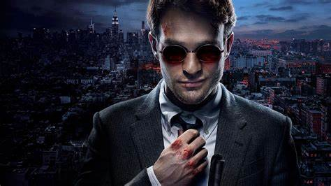
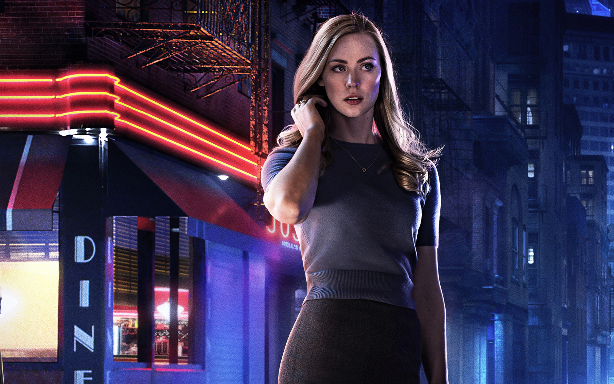
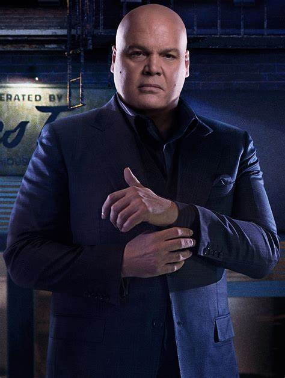
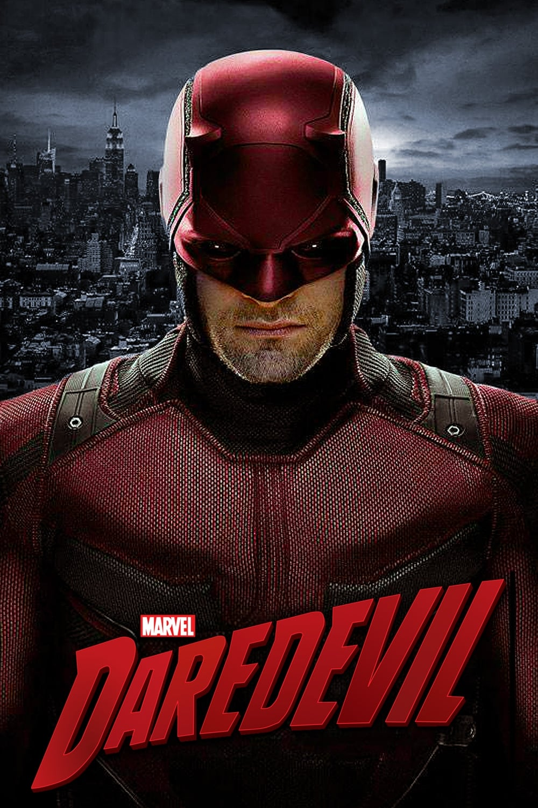

Se trata de una serie estadounidense creada por Drew Goddard para Netflix. La serie está ambientada en el Universo cinematográfico de Marvel (UCM), compartiendo continuidad con las películas de la franquicia; sin embargo, podemos decir que puede ser tomada como una serie independiente y seguir funcionando. La serie abarca los géneros de acción, drama, crimen y superhéroes, la cual sigue a Matt Murdock, un abogado ciego que lucha por la justicia bajo el sistema legal de día y de noche, como el justiciero Daredevil de noche. Esta serie abarca diversos temas como la corrupción en la sociedad, la diferente forma de cada persona de ver la justicia y la violencia como necesaria para lograrla, en diversos momentos se plantean cosas como la moralidad o si acaso hay alguna forma en que el matar esté justificado o que hacer cuando la justicia no resulta justa y resulta insuficiente.
Temporadas y Episodios
Episodio 1: En el cuadrilátero
Episodio 2: Mejor amigo
Episodio 3: Aguja en un pajar
Episodio 4: En la sangre
Episodio 5: Mundo en llamas
Episodio 6: Condenado
Episodio 7: Stick
Episodio 8: Sombras en el espejo
Episodio 9: Hablando del diablo
Episodio 10: Nelson vs Murdock
Episodio 11: El camino del hombre justo
Episodio 12: Aquellos que abandonamos
Episodio 13: Daredevil
Episodio 1: Bang
Episodio 2: Perros en un tiroteo
Episodio 3: Lo mejor de Nueva York
Episodio 4: Uno y diez centavos
Episodio 5: Kinbaku
Episodio 6: Solo remordimientos
Episodio 7: Semper fidelis
Episodio 8: Totalmente culpable
Episodio 9: Siete minutos en el cielo
Episodio 10: El hombre atrapado
Episodio 11: .380
Episodio 12: La oscuridad al final del túnel
Episodio 13: Un día frío en Hell's Kitchen
Episodio 1: Resurrección
Episodio 2: Por favor
Episodio 3: Ninguna buena acción
Episodio 4: Cegado
Episodio 5: El juego perfecto
Episodio 6: El diablo conocido
Episodio 7: Consecuencias
Episodio 8: Arriba y abajo
Episodio 9: Revelaciones
Episodio 10: Karen
Episodio 11: Reencuentro
Episodio 12: Última oportunidad
Episodio 13: Una servilleta nueva
Personajes

Matt Murdock / Daredevil
Principal protagonista de la serie , es un hombre ciego que trabaja como abogado de dia y como el justiciero Daredevil de noche contra el crimen organizado y la corrupcion de la ciudad.
Foggy Nelson
Mejor amigo y compañero de Matt Murdock en el bufete de abogados Nelson & Murdock.

Karen Page
La secretaria del bufete de abogados y eventual interés amoroso de Matt Murdock, involucrada en los casos legales y peligros de la serie.

Wilson Fisk
Es el principal antagonista de la serie el cual controla todo el crimen organizado de la ciudad y posee mucho poder e influencia en toda la sociedad como lo es la politica , policia,etc.
Poster

Daredevil (2015)
Matt Murdock no es cualquier abogado de Hell's Kitchen. Sus sentidos se
agudizaron tras quedar ciego en un accidente de niño. Bajo el manto de la noche, lucha contra el crimen y atrae enemigos poderosos, como Wilson Fisk (alias Kingpin). Pero su dilema crece día a día: debajo de la máscara, quiere creer en la ley; Daredevil, hace justicia por mano propia.